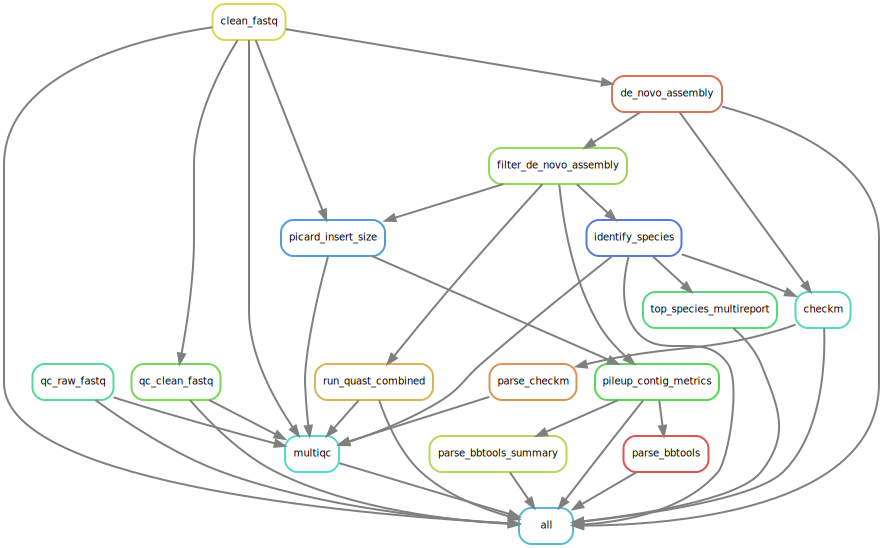

3 Juno-assembly pipeline

The goal of this pipeline is to generate assemblies from raw fastq files. The input of the pipeline is raw Illumina paired-end data in the form of two fastq files (with extension .fastq, .fastq.gz, .fq or .fq.gz), containing the forward and the reversed reads (’_R1’ and ’_R2’ must be part of the file name, respectively). On the basis of the generated genome assemblies, low quality and contaminated samples can be excluded for downstream analysis.
The pipeline uses the following tools:
- FastQC (Andrews, 2010) is used to assess the quality of Illumina reads. In this pipeline, it is used before and after trimming/filtering
- FastP (Chen, Zhou, Chen and Gu, 2018) is used to remove poor quality data and adapter sequences
- Picard determines the library fragment lengths
- The reads are assembled into scaffolds by SPAdes (Bankevich et al., 2012) by means of de novo assembly of the genome. SPAdes uses k-mers for building an initial de Bruijn graph and on following stages it performs graph-theoretical operations to assemble the genome. Kmer sizes of 21, 33, 55, 77 and 99 were used. For de novo assembly, SPAdes ‘isolate’ mode is used
- QUAST (Gurevich, Saveliev, Vyahhi, & Tesler, 2013) is used to assess the quality of the filtered scaffolds
- To assess the quality of the microbial genomes, CheckM (Parks, Imelfort, Skennerton, Hugenholtz, & Tyson, 2015) is used. CheckM calculates scores for completeness, contamination and strain heterogeneity
- Bbtools (Bushnell, 2014) is used to generate scaffold alignment metrics
- MultiQC (Ewels, Magnusson, Lundin, & Käller, 2016) is used to summarize analysis results and quality assessments in a single report for dynamic visualization.
- Kraken2 and Bracken for identification of bacterial species.

3.1 Handbook
3.1.1 Requirements and preparation
See the General Instructions for all pipelines first.
- You have different possibilities to run the complete pipeline.
- Your input directory should contain samples with just ONE genus type. If this is the case, you should tell the pipeline which genus you have (e.g. using the flag
--genus Salmonella). Read further for more details.
- You can provide a metadata CSV file that should contain at least two columns: ‘sample’ and ‘genus’ (all in small letters). . If this is not the case DO NOT MODIFY THAT EXCEL FILE! Instead follow the steps mentioned in the Troubleshooting section, particularly in the part “Error saying that my samples cannot be found on the Excel file with the genus list”
- If you do not do any of the above, the pipeline will run just fine. The only difference is that the genome completeness will be calculated based on the genus identified in your sample (the one with most confidence) instead of based on the genus you provided.
- Your input directory should contain samples with just ONE genus type. If this is the case, you should tell the pipeline which genus you have (e.g. using the flag
3.1.2 Download the pipeline
YOU NEED TO DOWNLOAD THE PIPELINE ONCE OR EVERY TIME YOU WANT TO UPDATE IT
Make sure to have followed the instructions to set up conda before installing any of our pipelines!
Please follow the instructions to download pipelines from the Juno team of the IDS-bioinformatics group. The Juno-assembly pipeline can be found in this link: Juno-assembly pipeline.
After downloading the pipeline, it needs to be installed. To install the pipeline, first enter the folder where you downloaded the pipeline and run the installation script:
cd /mnt/scratch_dir/<my_folder>/Juno_pipeline
bash install_juno_assembly.sh3.1.3 Start the analysis. Basics
- Open a terminal. (Applications > terminal).
- Enter the folder of the pipeline using:
cd /mnt/scratch_dir/<my_folder>/Juno_pipelineMAKE SURE YOU HAVE RUN THE INSTALLATION INSTRUCTIONS BEFORE USING THE PIPELINE FOR THE FIRST TIME OR AFTER AN UPDATE!
- Activate the ‘environment’ that has the necessary software for the pipeline to work:
conda activate juno_assemblyIf you run in trouble please see the troubleshooting section for conda activate.
- Run the pipeline
If all your samples have the same genus, for instance, Salmonella, you run it like this:
python juno_assembly.py -i /mnt/scratch_dir/<my_folder>/<my_data>/ --genus Salmonella- Note that the genus should be ONE word. Do not put any species names!
If you want to provide a metadata file do this:
python juno_assembly.py -i /mnt/scratch_dir/<my_folder>/<my_data>/ --metadata <path_to_file>.csvIf you do not want to provide the genus yourself, you can simply do :
python juno_assembly.py -i /mnt/scratch_dir/<my_folder>/<my_data>/Please read the section What to expect while running a Juno pipeline
See the section General Troubleshooting for any problems you may encounter.
Note: Do not keep all your data (including results) on the scratch_dir partition. You are allowed to keep 400GB max and with sequencing data, this can get full quite fast.
- Optionally, deactivate the juno_assembly environment.
conda deactivate3.1.4 Output
A folder called output/, inside the folder of the pipeline, will be created. This folder will contain all the results and logging files of your analysis. There will be one folder per result (qc_raw_fastq, clean_fastq, qc_clean_fastq, de_novo_assembly, de_novo_assembly_filtered, qc_de_novo_assembly, identify_species). Please refer to the manuals of every tool to interpret the results. .
Note: If you want your output to be stored in a folder with a different name or location, you can use the option -o (‘o’ from output)
python juno_assembly.py -i /mnt/scratch_dir/<my_folder>/<my_data>/ -o /mnt/scratch_dir/<my_folder>/<my_results>/Another very important output from the pipeline are the logging files and audit trail that contain information of the software versions used, the parameters used, the error messages, etc. They could be important for you if you want to publish or reproduce the analysis at a later time point and also to get help from the bioinformatics team if you were to run into trouble with the pipeline. Please read about these files here.
3.1.5 Troubleshooting for this pipeline
Please read first the General Troubleshooting section!
3.1.5.1 Error saying that the genus supplied was not recognized by CheckM
If you get this message:
The genus <your_provided_genus> is not supported. it means that although you provided the genus information, it is probably not supported by the tool CheckM. First check that you have no spelling mistakes in the genus name of your sample(s) or that you used the correct case (first letter capital and the rest on small letters). If you are sure that your spelling is correct, it may be that CheckM does not have the genus you supplied on its database. As the message says, if you are not sure on how to spell the genus name or which genus is accepted, please check the list of accepted genera by typing.
python juno_assembly.py -i /mnt/scratch_dir/<my_folder>/<my_data>/ --help-genera3.1.5.2 Other problems or failing rules
The Juno-assembly pipeline is still in development which means that sometimes the process can fail.
Before contacting for help, try these two steps:
Re-run the pipeline again and see if the process continues. If it does, please keep re-running the pipeline until your analysis is finished or there is no longer progress. In this case, send an email after the pipeline is finished so I can troubleshoot the problem.
Download the pipeline again and start from the beginning of this handbook. Sometimes there is an issue that has been resolved in newer versions of the pipeline.
If the pipeline still fails after these two steps, please inform me about the problem. Send an e-mail with the following content:
- The log and error files that can be found in the output folder
- The path to your input directory
- The path to where the pipeline is installed
Note: I cannot help you without this information, if information is missing there will be a delay in troubleshooting the problem.